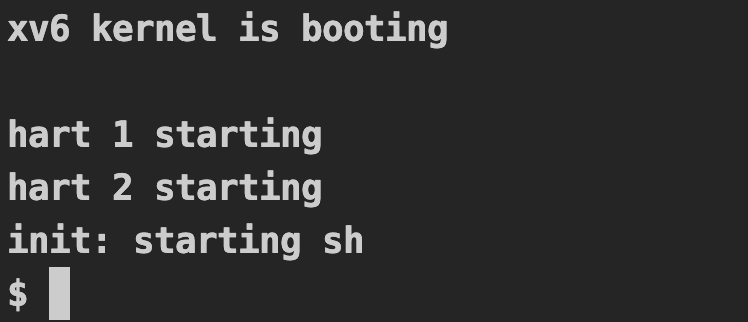

xv6编译
配好环境之后，在每个实验分支下，执行make qemu就可以启动xv6 shell。
qemu: $K/kernel fs.img
$(QEMU) $(QEMUOPTS)

qemu目标依赖kernel/kernel，fs.img；
kernel/kernel
kernel/kernel就是内核代码，由内核的.o文件，.ld文件，以及usr/initcode。注意到usr/initcode没有链接到kernel/kernel里。
$K/kernel: $(OBJS) $K/kernel.ld $U/initcode
$(LD) $(LDFLAGS) -T $K/kernel.ld -o $K/kernel $(OBJS)
$(OBJDUMP) -S $K/kernel > $K/kernel.asm
$(OBJDUMP) -t $K/kernel | sed '1,/SYMBOL TABLE/d; s/ .* / /; /^$$/d' > $K/kernel.sym
$U/initcode: $U/initcode.S
$(CC) $(CFLAGS) -march=rv64g -nostdinc -I. -Ikernel -c $U/initcode.S -o $U/initcode.o
$(LD) $(LDFLAGS) -N -e start -Ttext 0 -o $U/initcode.out $U/initcode.o
$(OBJCOPY) -S -O binary $U/initcode.out $U/initcode
$(OBJDUMP) -S $U/initcode.o > $U/initcode.asm
kernel/*.o文件由同名的.c文件通过隐式规则推导得到。如
riscv64-unknown-elf-gcc -Wall -Werror -O -fno-omit-frame-pointer -ggdb -DSOL_UTIL -MD -mcmodel=medany -ffreestanding -fno-common -nostdlib -mno-relax -I. -fno-stack-protector -fno-pie -no-pie -c -o kernel/fs.o kernel/fs.c
fs.img
fs.img是存储用户程序的文件，由mkfs/mkfs生成, mkfs/mkfs由mkfs/mkfs.c编译得到。可以看到mkfs/mkfs只用来制作fs.img，不会作为xv6读取的用户程序或者内核程序。
fs.img: mkfs/mkfs README $(UEXTRA) $(UPROGS)
mkfs/mkfs fs.img README $(UEXTRA) $(UPROGS)
UPROGS是user/_*可执行文件，由同名的.o文件和四个库文件$U/ulib.o $U/usys.o $U/printf.o $U/umalloc.o链接而成，
.o文件和$U/ulib.o $U/printf.o $U/umalloc.o由隐式规则推导得到
$U/usys.o由$U/usys.pl文件得到，系统调用的指令
传递参数
设置系统调用号
ecall指令
ULIB = $U/ulib.o $U/usys.o $U/printf.o $U/umalloc.o
_%: %.o $(ULIB)
$(LD) $(LDFLAGS) -N -e main -Ttext 0 -o $@ $^
$(OBJDUMP) -S $@ > $*.asm
$(OBJDUMP) -t $@ | sed '1,/SYMBOL TABLE/d; s/ .* / /; /^$$/d' > $*.sym
$U/usys.S : $U/usys.pl
perl $U/usys.pl > $U/usys.S
$U/usys.o : $U/usys.S
$(CC) $(CFLAGS) -c -o $U/usys.o $U/usys.S